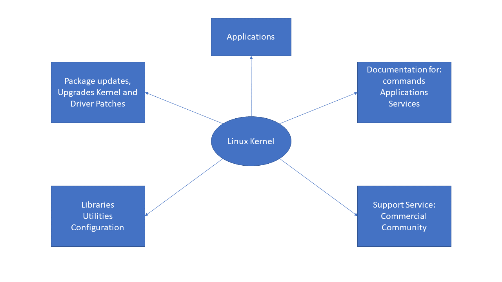

what is a Linux distribution and how does it relate to the Linux kernel?
We know that Linux kernel is the core of the operating system.
A full Linux distribution consists of the kernel with addition of a number of other software
tools for
file-related operations, user management, and software package management.
Every tool provides a part of the complete system.
Each tool is often its own separate project, with its own developers working to perfect that
piece of the system.
While the most recent Linux kernel (and earlier versions) can always be found in
The Linux Kernel Archives ,
Linux distributions may be based on different kernel versions.
For example, the very popular RHEL 8 distribution is based on the 4.18 kernel, which is not new,
but is extremely stable.
Other distributions may move more quickly in adopting the latest kernel releases.
It is important to note that the kernel is not an all or nothing proposition,
for example, RHEL/CentOS have incorporated many of the more recent kernel improvements into
their older versions, as have Ubuntu, openSUSE, SLES, etc.

Examples of other essential tools and ingredients provided by distributions, include the C/C++
and C-lang compilers, the gdb debugger,
the core system libraries applications need to link with in order to run,
the low-level interface for drawing graphics on the screen,
as well as the higher-level desktop environment,
and the system for installing and updating the various components, including the kernel itself.
And all distributions come with a rather complete suite of applications already installed.